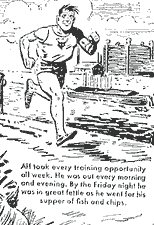

Monday, August the 16th, 2004
back to: title, date or indexes

Martin Tupper (left), the Victorian moralist and poetaster referred to in the item above, ought not be confused with Alf Tupper (right), the “tough of the track”. Context will usually allow you to ascertain which Tupper is the subject of discussion, but if in doubt you can always check back with this handy pictorial guide.
The above item was sponsored by the Hooting Yard Foundation's “Tell Your Tuppers Apart” programme, an ongoing multimedia project funded by shadowy Paraguayan gangsters.